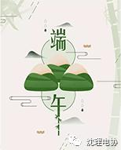
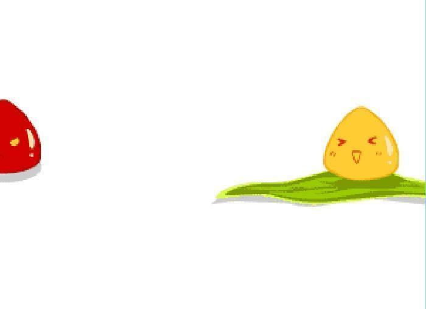

粽子节快乐

据史书记载，顺阳在上，五月是仲夏，它的第一个午日正是登高顺阳好天气之日，故五月初五亦称为“端阳节”。端午节，据传是中国古代伟大诗人、世界四大文化名人之一的屈原投汩罗江殉国的日子。两千多年来，每年的农历五月初五就成为了纪念屈原的传统节日。
据统计端午节的名称叫法达二十多个：如有端五节、端阳节、重五节、重午节、天中节、夏节、五月节、菖节、蒲节、龙舟节、浴兰节、屈原日、午日节、女儿节、地腊节、诗人节、龙日、午日、灯节、五蛋节等等。
让我们来了解一下有关端午节的习俗：
1、赛龙舟
赛龙舟，是端午节的主要习俗。相传起源于古时楚国人因舍不得贤臣屈原投江死去，许多人划船追赶拯救。他们争先恐后，追至洞庭湖时不见踪迹。之后每年五月五日划龙舟以纪念之。借划龙舟驱散江中之鱼，以免鱼吃掉屈原的身体。竞渡之习，盛行于吴、越、楚。
2、端午食粽
端午节吃粽子，这是中国人民的又一传统习俗。
3、佩香囊
端午节小孩佩香囊，传说有避邪驱瘟之意，实际是用于襟头点缀装饰。
4、悬钟馗像
钟馗捉鬼，是端午节习俗。
5、悬艾叶菖蒲
民谚说：“清明插柳，端午插艾”。在端午节，人们把插艾和菖蒲作为重要内容之一。家家都洒扫庭除，以菖蒲、艾条插于门眉，悬于堂中。并用菖蒲、艾叶、榴花、蒜头、龙船花，制成人形或虎形，称为艾人、艾虎；制成花环、佩饰，美丽芬芳，妇人争相佩戴，用以驱瘴。

端午节吃啥粽子？
白水粽
赤豆粽
蚕豆粽
枣子粽
玫瑰粽
瓜仁粽
猪油粽
猪肉粽
火腿粽
香肠粽
虾仁粽
肉丁粽
无论你是否在家过节，无论粽子甜的咸的，你都能在这个节日中咬上一口，希望心爱的人在身旁，也能怀念起妈妈包的味道。


——编辑：符阳懿